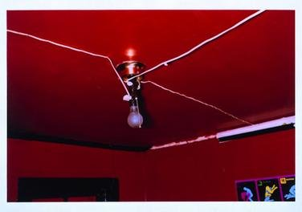

The Red Ceiling (Greenwood, Mississippi)
William Eggleston · 1973 · Dye transfer print · 35.2 × 55.1 cm
In copyright. Look and learn: shown for study, not for download.
The ceiling belonged to Eggleston's friend Dr. Thomas Chester Boring, Jr., at 508 Macarthur Street in Greenwood, Mississippi, and the formal title is simply Greenwood, Mississippi. Eggleston was teaching at Harvard around then and had found dye-transfer printing on the price list of a Chicago lab, a process used mostly for advertising pictures of cigarette packs and perfume bottles. He has said he never saw this picture reproduced on a page to his satisfaction. Big Star used it on the cover of their 1974 album Radio City.